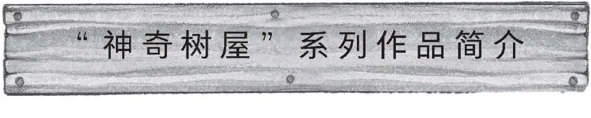
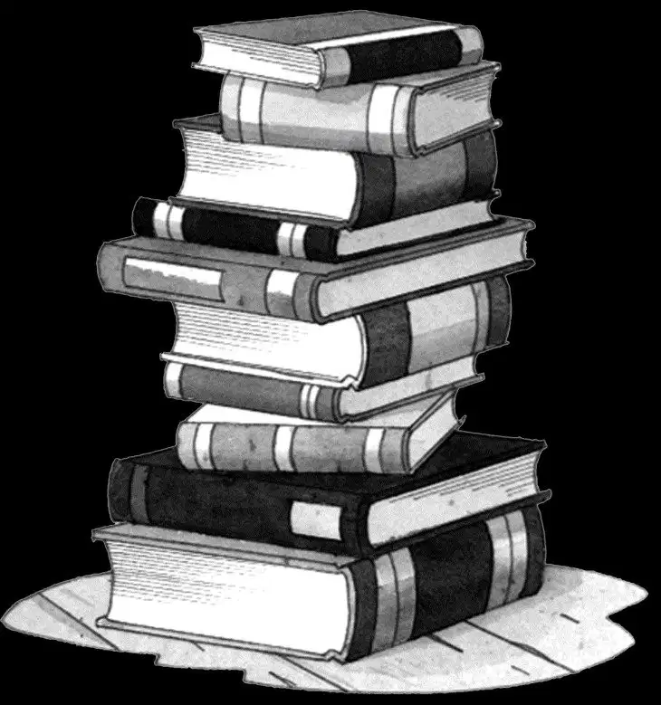

作为一个高产作家，玛丽·波·奥斯本已经创作了数百本儿童读物，包括小说、传记、绘本以及神话故事和民间传说改编。不过，“神奇树屋”系列图书的大热却是她没有想到的。
自从她开始创作这套丛书，各地小朋友、家长以及老师的来信就如雪花般源源不断地飞来。随后，她应邀去国内学校参观，发现“神奇树屋”系列图书已经走进校园，融入到了学生的学习和生活之中。校园里不仅随处可见“神奇树屋”的模型和壁画，有些学校甚至还搭建了真正的树屋，在里面摆上书籍供学生阅读。后来，这套系列图书被翻译成多种语言，在世界各地发行。玛丽·波·奥斯本也走出国门，向世界各地的人们宣传阅读和想象力的重要性。
几年前，玛丽在旅途中遇到了几位老师。受到他们的启发，玛丽和丈夫威尔开始创作“神奇树屋”故事系列的配套丛书：“神奇树屋”科普系列。在这之后，威尔又举办了一场“神奇树屋”天文展，并将进阶版其中1本故事书中的内容改编成音乐剧。玛丽的妹妹娜塔莉·波·博伊斯后来也加入了他们的创作团队，并和姐姐一起完成了十几本科普书的创作。
“神奇树屋”系列图书是一套真正意义上的家庭读物。它是玛丽一家齐心协力创作出来的优秀作品，因此非常适合全家人一起阅读。“神奇树屋”系列图书也是老师们在课堂教学上的好帮手，老师可以利用这套书，激发孩子们对于阅读和学习的兴趣。
